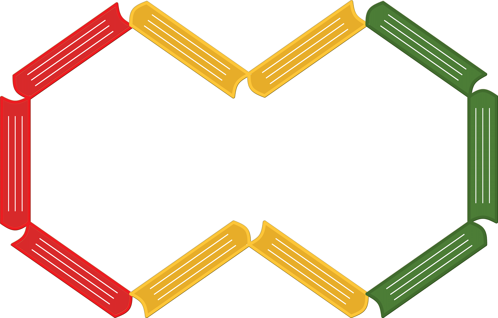

<nav class="navbar navbar-expand-lg navbar-dark bg-dark col-sm-12 col-md-12 col-lg-12">
    <a class="navbar-brand" routerLink="/">
    <span class="logo_name">LibraryONAFT</span></a>
    <button class="navbar-toggler" type="button" data-toggle="collapse" data-target="#navbarToggler"
            aria-controls="navbarToggler" aria-expanded="false" aria-label="Toggle navigation">
        <span class="navbar-toggler-icon"></span>
    </button>
    <div class="collapse navbar-collapse justify-content-end col-sm-12" id="navbarToggler" data-hover="dropdown"
         data-animations="fadeInUp ">
        <ul class="navbar-nav desk-nav mr-auto">
            <li class="nav-item dropdown">
                <a class="nav-link dropdown-toggle" href="#" id="resource" data-toggle="dropdown" aria-haspopup="true"
                   aria-expanded="false">
                    Ресурси
                </a>
                <div class="dropdown-menu" aria-labelledby="resource">
                    <div class="triangle"></div>
                    <a class="dropdown-item" href="http://library.onaft.edu.ua/elc/" target="_blank">Електроний
                        каталог</a>
                    <a class="dropdown-item" href="https://card-file.onaft.edu.ua/" target="_blank">Електроний архів
                        (репозитарій)</a>
                    <a class="dropdown-item" href="http://kci.onaft.edu.ua/" target="_blank">Центр наукової
                        періодики</a>
                    <a class="dropdown-item" routerLink="/patent">Патенти</a>
                </div>
            </li>

            <li class="nav-item dropdown">
                <a class="nav-link dropdown-toggle" href="#" id="science" data-hover="dropdown" data-toggle="dropdown"
                   aria-haspopup="true" aria-expanded="false">
                    Рекомендації
                </a>
                <div class="dropdown-menu" aria-labelledby="science">
                    <div class="triangle"></div>
                    <h6 class="dropdown-header dropdown-name">Вчені</h6>
                    <a class="dropdown-item" routerLink="/encyclopedia_of_scientists">Енциклопедія вчених</a>
                    <a class="dropdown-item" routerLink="/jubilee">Ювіляри</a>
                    <h6 class="dropdown-header dropdown-name">Дослідникам</h6>
                    <a class="dropdown-header" href="http://library.onaft.edu.ua/plus/Mizhnar_styli_posylannya.pdf"
                       target="_blank">Cтилі цитування</a>
                    <a class="dropdown-header submenu" href="" target="_blank">Законодавча база</a>
                    <div class="dropdown-menu">
                        <a class="dropdown-item" href="https://zakon1.rada.gov.ua/laws" target="_blank">Законодавство
                            України</a>
                        <a class="dropdown-item" href="http://www.library.univ.kiev.ua/ukr/for_lib/legal-pop.php3"
                           target="_blank"> Нормативно-правова база<br> діяльності бібліотек ВНЗ (популяр.)</a>
                        <a class="dropdown-item" href="http://www.library.univ.kiev.ua/ukr/for_lib/legal-2018.php3"
                           target="_blank"> Нормативно-правова база<br> діяльності бібліотек ВНЗ (2018 р.)</a>
                        <a class="dropdown-item" href="http://www.library.univ.kiev.ua/ukr/about/law.php3"
                           target="_blank">Перелік законодавчих<br> та нормативних документів </a>
                    </div>
                    <a class="dropdown-header submenu" href="#">ДСТУ/ГОСТ</a>
                    <div class="dropdown-menu">
                        <a class="dropdown-item" href="#">Правила складання бібл. опису</a>
                        <a class="dropdown-item" href="../../assets/pdf/DSTY-GOST/Bibl_opis_onovl.pdf" target="_blank">Приклади
                            оформлення бібл. опису</a>
                        <a class="dropdown-item" href="#" target="_blank">Правила складання списку бібл. посилань</a>
                        <a class="dropdown-item" href="#" target="_blank">Приклади оформлення списку бібл. посилань</a>
                        <a class="dropdown-item" href="#" target="_blank">ДСТУ ГОСТ</a>
                        <a class="dropdown-item" href="http://www.library.univ.kiev.ua/ukr/about/dstu.html"
                           target="_blank">Основні стандарти </a>
                    </div>
                </div>
            </li>

            <li class="nav-item">
                <a class="nav-link" routerLink="/books">Видання</a>
            </li>

            <li class="nav-item dropdown">
                <a class="nav-link dropdown-toggle" href="#" id="books" data-hover="dropdown" data-toggle="dropdown">
                    Про бібліотеку
                </a>
                <div class="dropdown-menu" aria-labelledby="books">
                    <div class="triangle"></div>
                    <a class="dropdown-item" href="../../assets/pdf/Regulations/ruls.pdf" target="_blank">Правила
                        користування</a>
                    <a class="dropdown-header submenu" href="" target="_blank">Регламент</a>
                    <div class="dropdown-menu">
                        <a class="dropdown-item" href="../../assets/pdf/Regulations/polojeniya.pdf" target="_blank">Положення
                            НТБ</a>
                        <a class="dropdown-item" href="../../assets/pdf/Regulations/ZVIT2018.pdf" target="_blank">Звіт
                            про роботу(2018 р.)</a>
                    </div>
                    <a class="dropdown-item" href="../../assets/pdf/library_history.pdf" target="_blank">Історія
                        бібліотеки</a>
                    <a class="dropdown-item" href="/exhibition" target="_blank">Виставки</a>
                </div>
            </li>
            <li class="nav-item nav-border">
                <a class="nav-link" href="#"><i class="far fa-user"></i> Авторизуватись</a>
            </li>
            <li class="nav-item dropdown ">
                <a class="nav-link dropdown-toggle" href="#" id="language" role="button" data-toggle="dropdown"
                   aria-haspopup="true" aria-expanded="false">
                    <i class="fas fa-globe-americas"></i>
                    UA
                </a>
                <div class="dropdown-menu" aria-labelledby="language">
                    <a class="dropdown-item" href="#">EN</a>
                    <a class="dropdown-item" href="#">RU</a>
                </div>
            </li>

        </ul>
        <ul class="navbar-nav mob-nav mr-auto col-sm-12">
            <li class="nav-item col-sm-12">
                <a class="nav-link" href="#" data-target="#resources" role="button" data-toggle="collapse" aria-expanded="false">
                    Ресурси <i class="fas fa-chevron-down"></i>
                </a>
                <div class="collapse navbar-collapse" id="resources">
                    <a class="dropdown-item" href="http://library.onaft.edu.ua/elc/" target="_blank">Електроний
                        каталог</a>
                    <a class="dropdown-item" href="https://card-file.onaft.edu.ua/" target="_blank">Електроний архів
                        (репозитарій)</a>
                    <a class="dropdown-item" href="http://kci.onaft.edu.ua/" target="_blank">Центр наукової
                        періодики</a>
                    <a class="dropdown-item" routerLink="/patent">Патенти</a>
                </div>
            </li>
            <li class="nav-item">
                <a class="nav-link" href="#" data-target="#propose" role="button" data-toggle="collapse" aria-expanded="false">
                    Рекомендації <i class="fas fa-chevron-down"></i>
                </a>
                <div class="collapse navbar-collapse" id="propose">
                    <h6 class="dropdown-header dropdown-name" [ngStyle]="{'color': '#d78737'}">Вчені</h6>
                    <a class="dropdown-item ml-1" routerLink="/encyclopedia_of_scientists">Енциклопедія вчених</a>
                    <a class="dropdown-item ml-1" routerLink="/jubilee">Ювіляри</a>
                    <h6 class="dropdown-header dropdown-name " [ngStyle]="{'color': '#d78737'}">Дослідникам</h6>
                    <a class="dropdown-item ml-1" href="http://library.onaft.edu.ua/plus/Mizhnar_styli_posylannya.pdf"
                       target="_blank">Cтилі цитування</a>
                    <h6 class="dropdown-header" [ngStyle]="{'color': '#fff'}">Законодавча база <i class="fas fa-chevron-down"></i></h6>
                        <a class="dropdown-item ml-2" href="https://zakon1.rada.gov.ua/laws" target="_blank">Законодавство
                            України</a>
                        <a class="dropdown-item ml-2" href="http://www.library.univ.kiev.ua/ukr/for_lib/legal-pop.php3"
                           target="_blank"> База діяльності бібліотек ВНЗ (популяр.)</a>
                        <a class="dropdown-item ml-2" href="http://www.library.univ.kiev.ua/ukr/for_lib/legal-2018.php3"
                           target="_blank"> База діяльності бібліотек ВНЗ (2018 р.)</a>
                        <a class="dropdown-item ml-2" href="http://www.library.univ.kiev.ua/ukr/about/law.php3"
                           target="_blank">Перелік законодавчих та нормативних документів </a>
                    <h6 class="dropdown-header ml-1" [ngStyle]="{'color': '#fff'}">ДСТУ/ГОСТ <i class="fas fa-chevron-down"></i></h6>
                        <a class="dropdown-item ml-2" href="#">Правила складання бібл. опису</a>
                        <a class="dropdown-item ml-2" href="../../assets/pdf/DSTY-GOST/Bibl_opis_onovl.pdf" target="_blank">Приклади
                            оформлення бібл. опису</a>
                        <a class="dropdown-item ml-2" href="#" target="_blank">Правила складання списку бібл. посилань</a>
                        <a class="dropdown-item ml-2" href="#" target="_blank">Приклади оформлення списку бібл. посилань</a>
                        <a class="dropdown-item ml-2" href="#" target="_blank">ДСТУ ГОСТ</a>
                        <a class="dropdown-item ml-2" href="http://www.library.univ.kiev.ua/ukr/about/dstu.html"
                           target="_blank">Основні стандарти </a>
                </div>
            </li>
        </ul>
    </div>
</nav>
